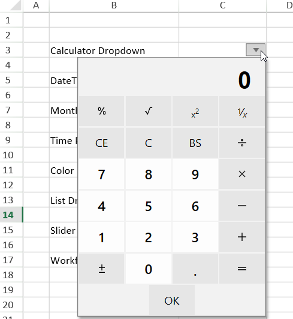
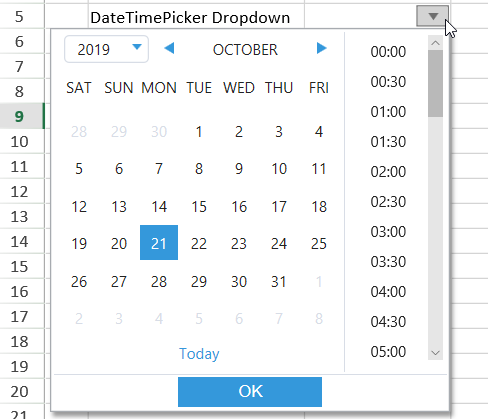
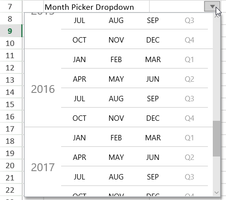
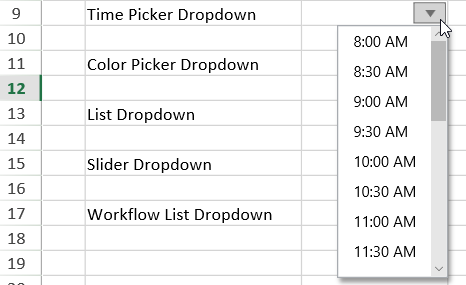
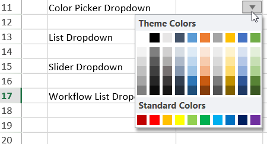
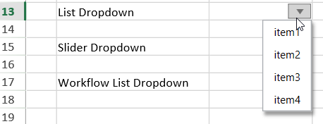
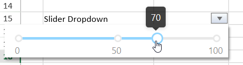
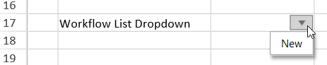

SpreadJS allows users to add a drop down cell in the worksheet. With this feature, users can add a drop down menu with specific properties to the cells in a workbook as per their specific requirements and preferences.
What are Cell Dropdowns?
Cell dropdowns provide a drop down menu in the cell that can help users in selecting the data easily and quickly.
This feature is helpful in creating input form controls, advanced structured forms and other interactive forms and dashboards within the spreadsheet.
Types of Cell Dropdowns - SpreadJS provides eight different types of built-in dropdown menus while working with spreadsheets. Users can use the DropDownType enumeration to simply specify a value (ranging from 0 to 7) and the corresponding cell dropdown type will be picked as per the following options:
- Calculator Dropdown [Enum Value : 6]
- Date Time Picker Dropdown [Enum Value : 1]
- Month Picker Dropdown [Enum Value : 3 ]
- Time Picker Dropdown [Enum Value : 2]
- Color Picker Dropdown [Enum Value : 0]
- List Dropdown [Enum Value : 4]
- Slider Dropdown [Enum Value : 5]
- Workflow List Dropdown [Enum Value : 7]
Configuring Cell Dropdowns - Users can configure a dropdown cell with a list of predefined values (using a list dropdown); calculated values (using a calculator dropdown); calendars and events (using date time picker, month picker and time picker dropdowns); select a color (using color picker dropdown); create range sliders (using a slider dropdown) and automatically repopulate the next available choices based on the earlier choice (using a workflow list dropdown) as shown in the screesnhot shared below.

Calculator Dropdown
The calculator dropdown in a cell allows users to compute the values and populate the evaluated result in the cell. The following screenshot depicts the calculator dropdown in cell C3 with a dropdown indicator.

Users can configure the calculator dropdown in a cell by adding a dropdown button using the cellButtons field of the Style class and setting its command parameter to "openCalculator" as shown in the code snippet shared below.
| JavaScript |
Copy Code
|
|---|---|
|
// Set Calculator Dropdown |
|
Date Time Picker Dropdown
The date time picker dropdown in a cell allows users to set date and time to populate the evaluated result in the cell. The following screenshot depicts the date time picker dropdown in cell C5 with a dropdown indicator.

Users can configure the date time picker dropdown in a cell by adding a dropdown button using the cellButtons field of the Style class and setting its command parameter to "openDateTimePicker" as shown in the code snippet shared below.
| JavaScript |
Copy Code
|
|---|---|
|
// Set DateTimePicker Dropdown |
|
Month Picker Dropdown
The date time picker dropdown in a cell allows users to configure a specfiic month in a year to populate the evaluated result in the cell. The following screenshot depicts the month picker dropdown in cell C7 with a dropdown indicator.

Users can configure the month picker dropdown in a cell by adding a dropdown button using the cellButtons field of the Style class and setting its command parameter to "openMonthPicker" as shown in the code snippet shared below.
| JavaScript |
Copy Code
|
|---|---|
|
// Set MonthPicker Dropdown monthPickerStyle.dropDowns = [ |
|
Time Picker Dropdown
The date time picker dropdown in a cell allows users to configure a specfiic time to populate the evaluated result in the cell. The following screenshot depicts the time picker dropdown in cell C9 with a dropdown indicator.

Users can configure the time picker dropdown in a cell by adding a dropdown button using the cellButtons field of the Style class and setting its command parameter to "openTimePicker" as shown in the code snippet shared below.
| JavaScript |
Copy Code
|
|---|---|
| // Set the TimePicker Dropdown var timePickerStyle = new GC.Spread.Sheets.Style(); timePickerStyle.cellButtons = [ { imageType: GC.Spread.Sheets.ButtonImageType.dropdown, command: "openTimePicker", useButtonStyle: true, } ]; timePickerStyle.dropDowns = [ { type: GC.Spread.Sheets.DropDownType.timePicker, option: { min: { hour: 8 }, max: { hour: 19 }, step: { minute: 30 }, formatString: "h:mm AM/PM", } } ]; activeSheet.setText(8, 3, "Time Picker Dropdown"); activeSheet.setStyle(8, 4, timePickerStyle); |
|
Color Picker Dropdown
The color picker dropdown in a cell allows users to choose a specific color to populate the cell value with the hex code of the chosen color. The following screenshot depicts the color picker dropdown in cell C11 with a dropdown indicator.

Users can configure the color picker dropdown in a cell by adding a dropdown button using the cellButtons field of the Style class and setting its command parameter to "openColorPicker" as shown in the code snippet shared below.
| JavaScript |
Copy Code
|
|---|---|
| // Set the ColorPicker Dropdown var colorPickerStyle = new GC.Spread.Sheets.Style(); colorPickerStyle.cellButtons = [ { imageType: GC.Spread.Sheets.ButtonImageType.dropdown, command: "openColorPicker", useButtonStyle: true, } ]; activeSheet.setText(10, 3, "Color Picker Dropdown"); activeSheet.setStyle(10, 4, colorPickerStyle); |
|
List Dropdown
The list dropdown in a cell allows users to choose a specific item from the dropdown list to populate the cell value. The following screenshot depicts the list dropdown in cell C13 with a dropdown indicator.

Users can configure the list dropdown in a cell by adding a dropdown button using the cellButtons field of the Style class and setting its command parameter to "openList" as shown in the code snippet shared below.
| JavaScript |
Copy Code
|
|---|---|
| // Set the List Dropdown var listStyle = new GC.Spread.Sheets.Style(); listStyle.cellButtons = [ { imageType: GC.Spread.Sheets.ButtonImageType.dropdown, command: "openList", useButtonStyle: true, } ]; listStyle.dropDowns = [ { type: GC.Spread.Sheets.DropDownType.list, option: { items: [ { text: 'item1', value: 'item1' }, { text: 'item2', value: 'item2' }, { text: 'item3', value: 'item3' }, { text: 'item4', value: 'item4' } ], } } ]; activeSheet.setText(12, 3, "List Dropdown"); activeSheet.setStyle(12, 4, listStyle); |
|
Slider Dropdown
The slider dropdown in a cell allows users to add a dynamic range slider in a cell that populates the current value in the cell. The following screenshot depicts the slider dropdown in cell C15 with a dropdown indicator.

Users can configure the slider dropdown in a cell by adding a dropdown button using the cellButtons field of the Style class and setting its command parameter to "openSlider" as shown in the code snippet shared below.
| JavaScript |
Copy Code
|
|---|---|
| // Set the Slider dropdown var horizontalSliderStyle = new GC.Spread.Sheets.Style(); horizontalSliderStyle.cellButtons = [ { imageType: GC.Spread.Sheets.ButtonImageType.dropdown, command: "openSlider", useButtonStyle: true, } ]; horizontalSliderStyle.dropDowns = [ { type: GC.Spread.Sheets.DropDownType.slider, option: { marks: [0, 50, 100], step: 10, direction: GC.Spread.Sheets.LayoutDirection.horizontal, } } ]; activeSheet.setText(14, 3, "Slider Dropdown"); activeSheet.setStyle(14, 4, horizontalSliderStyle); |
|
Workflow List Dropdown
The workflow list dropdown in a cell allows users to select workflow item easily and quickly to populate the chosen value in the cell. The following screenshot depicts the workflow list dropdown in cell C17 with a dropdown indicator.

Users can configure the workflow list dropdown in a cell by adding a dropdown button using the cellButtons field of the Style class and setting its command parameter to "openWorkflowList" as shown in the code snippet shared below.
| JavaScript |
Copy Code
|
|---|---|
| //Set the Workflow list dropdown let workflowListStyle = new GC.Spread.Sheets.Style(); workflowListStyle.cellButtons = [ { imageType: GC.Spread.Sheets.ButtonImageType.dropdown, command: "openWorkflowList", useButtonStyle: true, } ]; workflowListStyle.dropDowns = [ { type: GC.Spread.Sheets.DropDownType.workflowList, option: { items: [ { value: "New", transitions: [1] }, { value: "Open", transitions: [0, 2, 3, 5] }, { value: "In Progress", transitions: [1, 3, 5] }, { value: "Resolved", transitions: [5, 4] }, { value: "Reopened", transitions: [5, 3, 2] }, { value: "Closed", transitions: [4] }, ] } } ]; activeSheet.setText(16, 3, "Workflow List Dropdown"); activeSheet.setStyle(16, 4, workflowListStyle); |
|